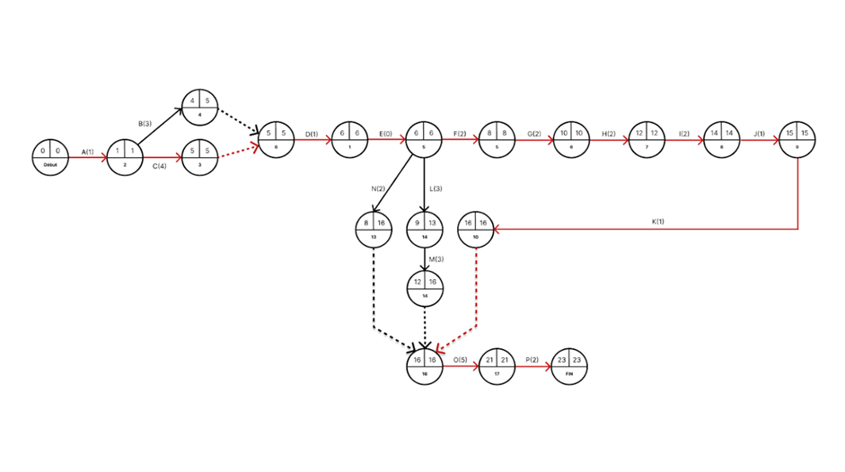
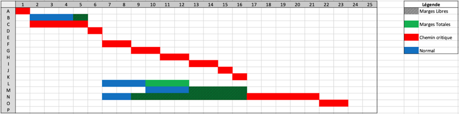

Gestion de projet
Gestion de l’installation d’un espace coworking. Gérer le budget et le temps.
Dans le cadre d'un projet scolaire en groupe de 4, nous devions apprendre à travailler en équipe
via la mise en place d'outils de gestion et appréhender les besoins client.
Sujet
Vous devez aider Camille à concrétiser son projet d'espace de coworking en accomplissant plusieurs
missions :
- Référencer les actifs immobilisés : Créer un tableau des actifs de l'entreprise avec numéro de
compte,
intitulé, et coût, ainsi qu'un autre tableau détaillant les spécificités techniques des actifs
informatiques, justifié par des sources.
- Planifier le projet : Élaborer le PERT et le GANTT pour les étapes préalables au lancement du
projet,
basé sur les conseils de Seifer.
- Évaluation financière : Présenter un tableau consolidant les coûts des différents éléments du
projet, en
précisant quantité, prix unitaire, et montant total, tout en suivant le plan comptable général.
- Bilan initial : Établir un bilan initial en considérant une levée de fonds de 1 million d'euros, un
emprunt de 100 000,00 €, et des politiques de paiement auprès des fournisseurs.
- Cahier des charges : Rédiger un cahier des charges du projet, en incluant les six étapes de gestion
de
projet, sur environ 10 pages, avec une mise en page pertinente tant sur le fond que sur la forme.
Pour permettre de planifier et de prévoir les tâches à effectuer, nous avons réalisé un graphe de PERT
et de GANTT


Compétences Acquises
-
AC15.01 | Appréhender les besoins du client et de l’utilisateur
-
AC15.02 | Mettre en place les outils de gestion de projet
-
AC15.03 | Identifier les acteurs et les différentes phases d’un cycle de développement